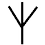
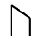
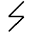
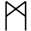
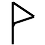
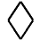

|
Contents
|
Regional Information
Mythologies
Campaigns
|
|
Mage Smiths
|
|
Mage smiths are those smiths who have knowledge of rune
magic. Most experienced smiths will have some knowledge,
though few are masters at the craft.
|
|
|
Runes and Virtues
There is a form of magic which enables skilled smiths to enchant an item
with virtues, making them better than a similar, non-virtued, item.
Simple Weapon Virtues
|  |
Blade turn. When set into a weapon or shield,
improves the weapon's ability to turn aside attacks. |
| |
True blow. When set into a weapon, increases
that weapon's ability to land a blow on the enemy. |
|  |
Quickness. When set upon a weapon, makes that
weapon quicker than before. |
|  |
Bite. When set upon a weapon, the weapon becomes
more capable of injury a foe, making it sharper and harder. |
| |
Flight. If an arrow or spear carries this run,
then its range is magically increased. |
Simple Armour Virtues
|  |
Virtue of Absorbtion. If this rune is worked
into armour, then the ability of the armour to turn aside a blow is
improved. |
| |
Virtue of Silence. This virtue masks the noise
made by armour. It is quite rare, since there is rarely much call for
it. |
General Virtues
|  |
Glimmer. An item which carries this rune is
always bright. It does not give off its own light, but is highly
reflective, making it seem to shine in sunlight. It can only be crafted
on metal items. |
| |
Darkness. This rune makes an item dark and
non-reflective. The metal will appear black, even in direct sunlight.
It can only be worked into metal items. |
|  |
Sharpness. Any item which carries this rune
will keep its edge, resist rust and generally last longer. It is a
very common rune, since it is quite easy to work. |
The Man Rune
Possibly the most powerful of the runes which can be placed onto
items, this rune binds with others, and redirects their power onto
the user of the item.
|  |
The Man Rune. By itself this means nothing,
but combined with other runes, it bestows the virtue upon the wielder
or wearer of the item, rather than on the item itself. |
| |
Virtue of the Bear. Grants strength to the
user of the item while it is being used. |
| |
Virtue of the Panther. Grants the user with greater
speed and agility. |
|  |
Virtue of the Serpent. Grants the user of the
item greater dexterity. |
| |
Virtue of the Troll. Fills the user with the
strength to resist damage. |
The Necromancy Rune
Also know as the spirit rune, or the death rune, this
affects the spirit of a person, either to protect or to harm. It is
rarely found, since few smiths have knowledge of the necromantic arts.
Further, it can be difficult to craft properly, and is rarely wanted.
| |
Necromancy Rune. This rune does nothing, but
is instead combined with others in order to affect the spirit. |
| |
Virtue of Life. When placed on a weapon, any
wound caused by the weapon also harms the creature's life force,
draining them of their energy. |
| |
Virtue of Fear. When placed on any item, if that
item is presented, then it instills fear in all those that view it. |
| |
Virtue of the Spirit. When placed on any item, that
item becomes more susceptible to affecting spirits. Weapons are able to harm
them, armour and shields are able to protected against them. |
Link Runes
All the runes so far are designed to be carved onto a single item. If
multiple items (such as a sword and shield) are used together, then effects
combine. The exception to this are runes combined with the man rune or
spirit rune - in such cases, only the greatest magic will prevail.
The most powerful virtues are difficult to instill in a single item. Instead,
it is possible to split the magic across two or three items. This makes the
crafting of the item easier, but means that all items must be used together
to active the virtues. To do this, two linking runes are used, which bind
together two or three items. They follow the rune set they are linking, and
appear on all items in the linked set.
|  |
Binding Rune. This rune binds a virtue across
two items. Both items must be in use for the virtue to be activated. |
|  |
Binding Rune. This rune binds a virtue across
three items. All three items must be in use for the virtue to be activated.
|
|